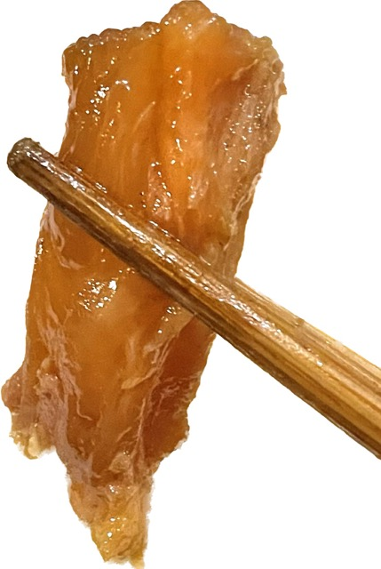

Estamos abertos novamente. Telefone: 11-32030-0721. Horários: Quartas, Quintas e Sextas das 18:00 até 22:00. Obrigado!
小籠包 - R$ 45,00
Mandu - Steamed Pork Buns
Mandu é um bolinho de carne de porco com vegetal muito conhecido na China como "o pão do pequeno dragão." É cozido a vapor.
[EN] Pork mixed with begetable and cooked in a steamer. It's known as "the little dragon bun" in China.
粉蒸排骨 - R$ 35,00
Costelinha de Porco - Steamed Pork Rib
A nossa costelinha é a única do Brasil. Costela de porco a vapor com arroz japonês granulado ao redor e levemente apimentado. Acompanha batata doce.
[EN] Hot por ribs cooked in the small bamboo steamer with sweet patatoes. Only Loon Hua offers this dish in Brazil.
菜肉餛飩 - R$ 45,00
Ensopado de Wan Tan - Won Ton Soup
Wan Tan (ravioli chinês) de carne de porco com caldo de frango e especiarias. Conhecido também como "Wan Tan de Shangai" pelo uso de carne de porco ao invés camarão - usado no sul da China.
[EN] Pork mixed with vegetable with special chicken soup. It is also known as "Won Ton of Shanghai" because it uses pork instead of shrimp - common in Southern China.
牛肉麵 - R$ 45,00
Macarrão de Carne - Beef Noodles Soup
Macarrão feito pela própria casa com caldo de carne e especiarias. Acompanha vegetal e pedaços de carne bovina cozida em um molho especial. É muito popular na região do norte da China.
[EN] Beef cooked with soup noddles. It comes with vegetable and beef specially cooked in a special sauce. It's very popular in the Northern China

牛肉麵 - R$ 45,00
Macarrão de Nervo Bovino - Beef Tendon Noodles Soup
Macarrão feito pela própria casa com caldo de tendao de carne e especiarias. Acompanha vegetal e pedaços de tendão bovina cozida em um molho especial. É muito popular na região do norte da China.
[EN] Beef Tendon cooked with soup noddles. It comes with vegetable and beef specially cooked in a special sauce. It's very popular in the Northern China
Só mostramos alguns dos nossos pratos principais. Venha já conhecer os nossos outros pratos deliciosos!